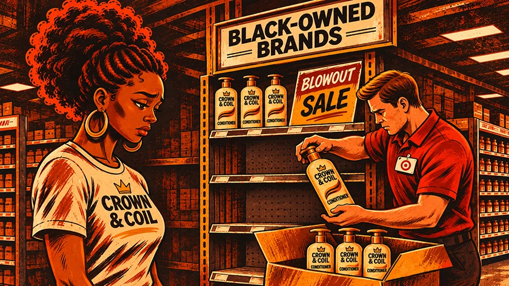
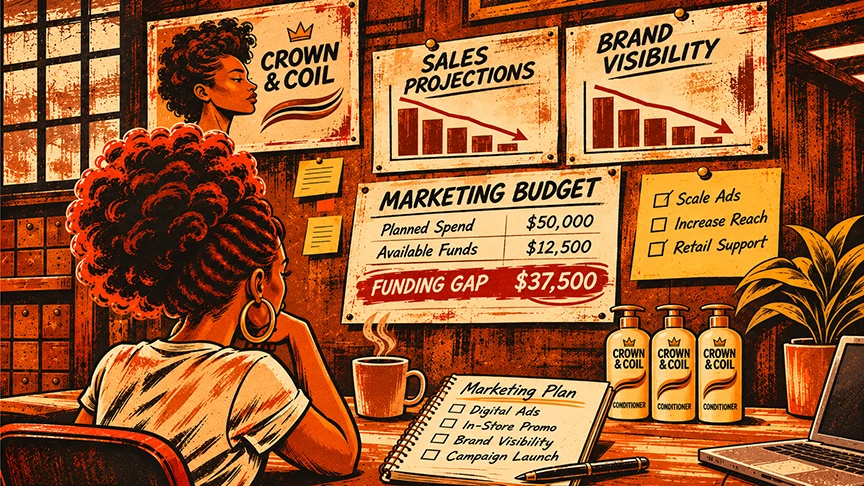
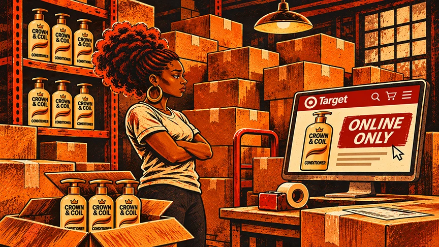
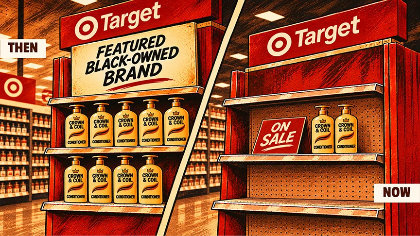

THE HIDDEN STORIES
Target committed to spending more than $2 billion with Black-led businesses by 2025. The effort aimed create more equitable experiences for Black guests and economic opportunity beyond its own stores.
In January of 2025, Target scaled back its DEI initiatives. This walk back has created uncertainty about distribution, visibility, and consumer demand for Black-owned brands. Without internal advocacy through mentorship and previously pledged financial support, retailers already in partnership with Target were left to fend for themselves.




In 2025, Target removed a hair-tool merchant’s product from its physical shelves after sales declined.
The merchant couldn’t access the capital needed to market once the product was no longer highlighted.
Her inventory became stagnant by Target’s standards and her own. In 2026, the product is now sold only online via Target’s website.
Target was considered the gold standard of “making it” for Black merchants. The partnership, along with the promised support, allowed her and other Black-owned brands to reach audiences they could not reach alone. It was the equivalent of the “Netflix special” comedians work to achieve. Not so anymore.